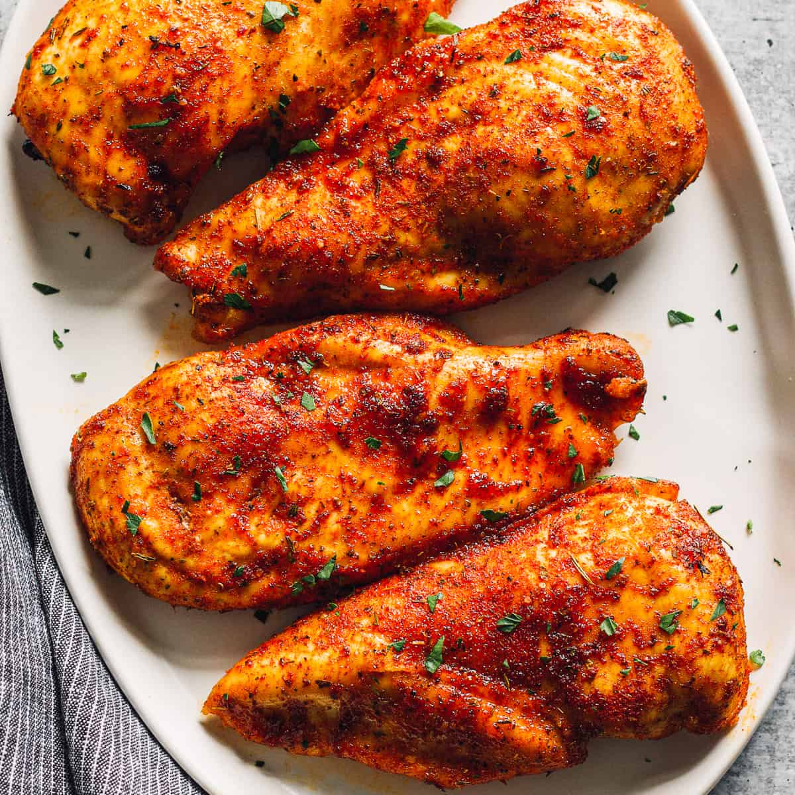

Kagan's favorite Dry Chicken Recipe

Description
This recipe consists of either chicken breast or thighs, paprika, cayenne powder
black pepper, garlic powder, onion powder, salt.
Ingredients
- Chicken Breast or Thighs
- Cayenne Powder
- Paprika
- Onion Powder
- Garlic Powder
- Black Pepper
- Salt
Steps
- Cook your chicken until the juice dries up
- Add your seasonings and stir so that they dont burn
- After the seasonings stick their colour and flavour into the chicken
turn down the heat
- Plate it up and eat!